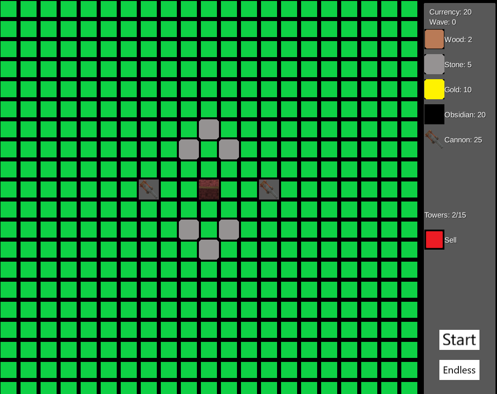
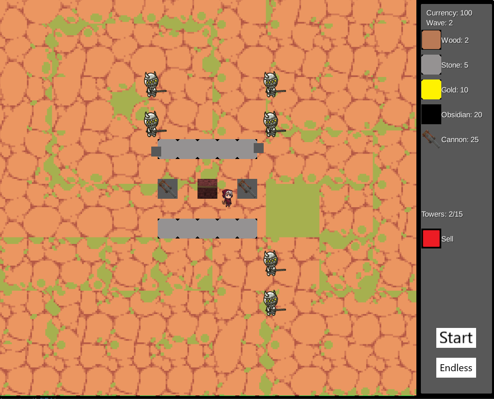
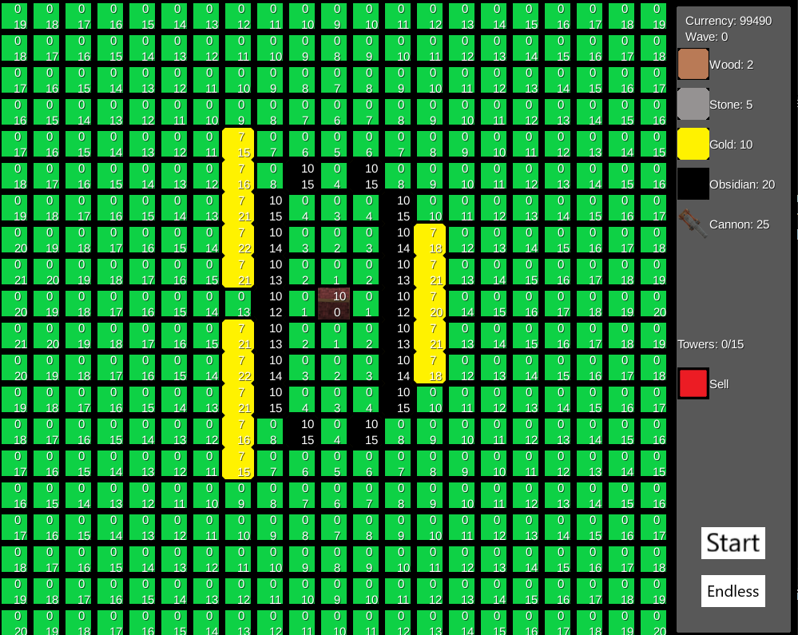

Game Design - Tower Defense
2D Tower Defense Game
Project Details / Background
Game Design project where I made a 2D tower defense game. The player starts with
100 currency and can place down walls and/or cannons to defend their base from incoming waves of enemies.
The game starts in a build phase where the tilemap is shown and the player can add or remove walls or cannons.
Then when the player starts the round, the game is switched to a normal view of the battlefield and enemies are spawned in
and approach the player's base to destroy it.
Every frame runs Dijkstra's Algorithm and enemies index into their tile to view the optimal pathing.
When the player places walls, each tier of wall has a health value and a defense value. Each tile in Dijkstra's Algorithm
costs 1 movement, the defense value of a wall or cannon increases the movement cost meaning that enemies will pathfind to
go around walls or to the weakest link in the walls. If an enemy is attacking a wall, its health decreases lowering its
defense value so that other enemies will also target this new weakness and eventually destroy the wall or obstacle.
Image Gallery

Build phase, the user can build or delete walls/towers.

Battle phase, the user can move their character and help shoot projectiles at the approaching enemies.

Debugging text enabled, in each tile the top number is the health whatever occupies that space and the bottom number is the distance to the base according to Dijkstra's Algorithm.